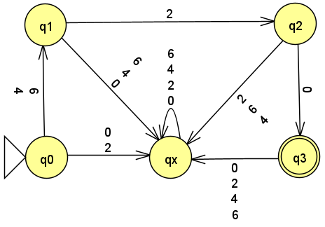

Homework 1
Last updated: Mon, 22 Sep 2025 11:25:30 -0400
Out: Mon Sept 8, 12:00pm EDT (noon) Due: Mon Sept 15, 12:00pm EDT (noon)
Note: Assignments are not officially "released" until—
and are subject to change without notice up to— the indicated "Out" date and time. Students who look ahead are responsible for ensuring that they are always working with the most recent version of the homework.
This assignment begins to explore deterministic finite automata (DFAs) and regular languages.
Homework Problems
HW 0 Second Chance! (up to 4 points extra)
Proof Practice (10 pts)
DFA Formal Description (15 points)
README (1 point)
Maximum: 30 (out of 26) points
Submitting
Submit your solution to this assignment in Gradescope hw1. Please assign each page to the correct problem and make sure your solutions are legible.
A submission must also include a README containing the required information.
HW 0 Second Chance!
what your misunderstanding was, and
what the right answer should be.
You will receive 1 bonus pt on this assignment for each HW 0 question where you provide the above information.
Alternatively, if you got less than four questions wrong, you may come up with a possible discrete math quiz question that you think would help future students prepare for this course.
You will receive 1 bonus pt on this assignment for each quiz question you come up with.
The maximum bonus that may be earned on this assignment is 4 points.
1 Proof Practice
Assume that a course syllabus says that "If a student receives an average hw grade of 90 percent or above, then they will receive an A grade for the course".
Given this, prove the following statement:
"If a Student receives hw scores of 70, 88, 95, 98, and 100 percent, then that Student will receive an A grade for the course".
Your proof must be in the form of a Statements and Justifications table, as presented in class and described in the textbook.
Note that no English prose is allowed in a Statements and Justifications table. The Statements column may only include valid logical statements which must be true. The Justifications column may only use given assumptions, definitions, or previously proved theorems from this course this semester (ask if you are not sure). In particular, any invalid, incomprehensible, or false table entries will not receive any credit.
2 DFA Formal Description
The first computational model we are studying is a class of machines called finite state automata (FSMs), or more specifically deterministic finite automata (DFAs). Intuitively, you can think of this as a "programming language" for expressing basic string matching computation (i.e., "programs").
Following this analogy, a single DFA then would be a "program" that does a single string matching computation task. We learned in lecture that this "program" can have many representations, including a graphical one, i.e., a state diagram.
In this problem, you will work with various representations, also also reason about how it "runs".
UPDATE (2025-09-10):
start in the start state
from the start state, follow the transition arrow labeled with the first character in the input string to go to the next state
repeat for each other character in the input string
if the last state is an accept state, then the result of the computation is (to) accept (the input string), otherwise the result of the computation is reject
END UPDATE
Concretely, imagine you have been given the task of implementing a computation ("program") that matches on "theory of computation" course numbers. All other strings over the alphabet should fail to match.
The following FSM (DFA) represents computation that could do this task.
(In the state diagram, transitions with multiple character labels are a graphical abbreviation representing multiple transitions, one for each one of the characters.)

Come up with 2 strings that are accepted by the DFA. These strings are said to be "in the language" recognized by the DFA.
Come up with 2 strings that are not accepted (rejected) by the DFA. These strings are "not in the language" recognized by the DFA.
In this course, a language is a set of strings. Further, the set of all strings accepted by a machine is called the language of the machine, or the language recognized by the machine. In fact, in this course, we will come to view machines as merely an alternate representation of a language, i.e., they are the same thing!.
If the given DFA is named T, then what is the language of T, often denoted, L(T). (Remember that a language is set so any answer that is not a set cannot be correct.)
Come up with a formal description for this DFA. Remember that the DFA is named T.
Recall that a DFA’s formal description is a tuple of five components, e.g. M = (Q,\Sigma,\delta,q_{start},F).
You may assume that the alphabet contains only the symbols from the diagram.